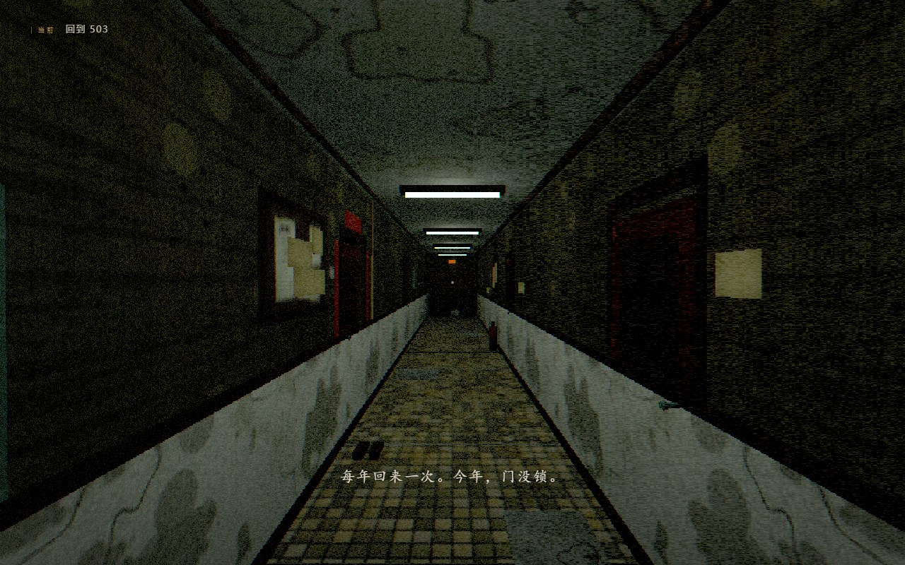
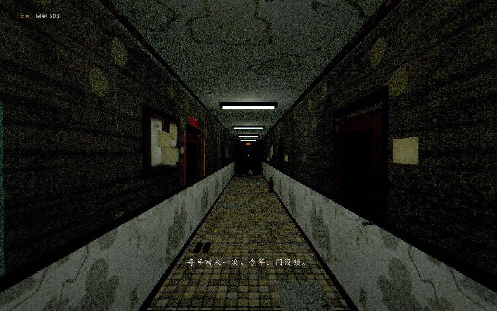
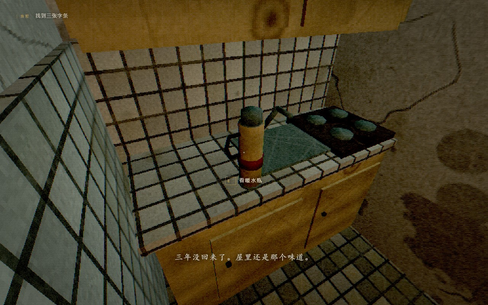
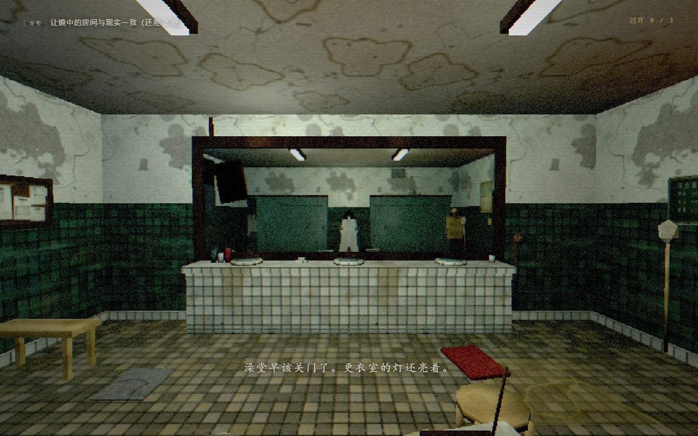
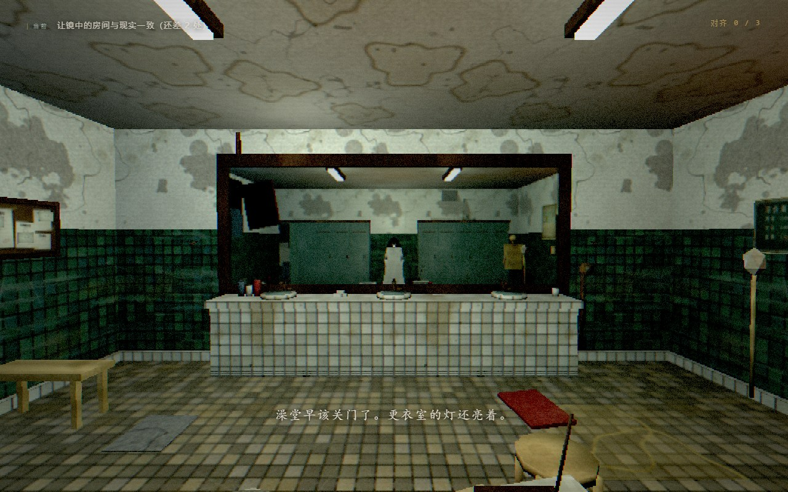
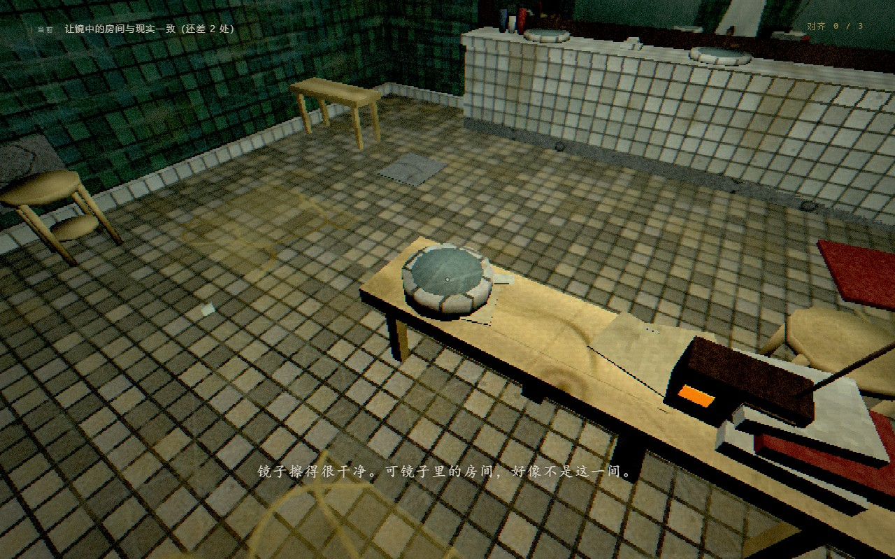
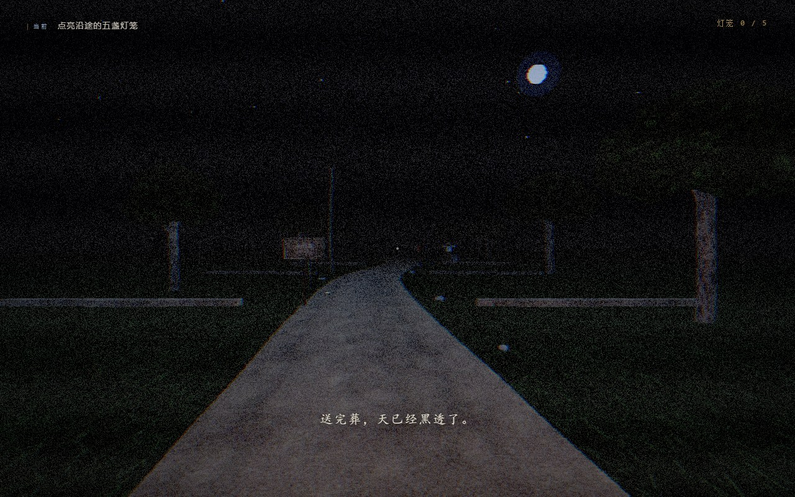
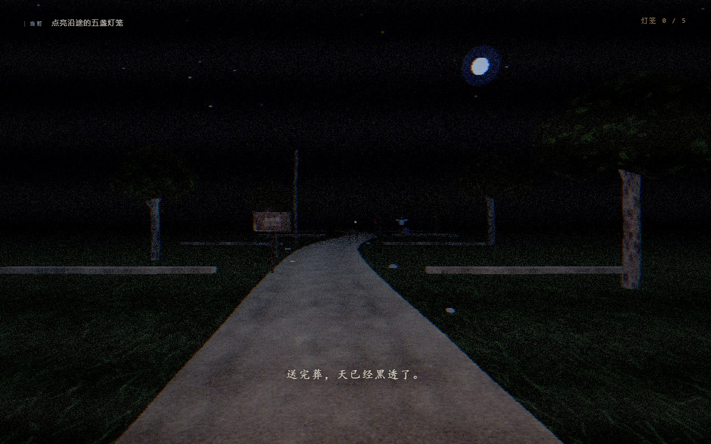
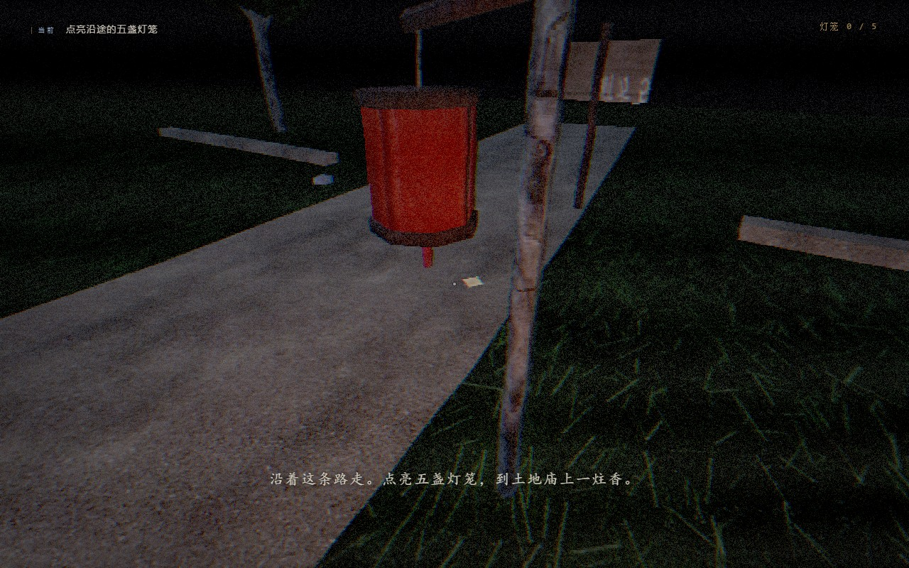

保留低多边形、低分辨率与旧物色板。降低屏幕颗粒与暗角；初始厨房增加局部任务光；暖水瓶补完整握把。六种材质只加入受限微细节，三篇各混入一层低音量环境声。
进入游戏 · 制作与验证记录 · Blender 往返结果
基线 18df312 / codex/av-baseline-20261021。入口为同机位采样，但时间性颗粒、声音和粒子并非锁帧对照。近景使用辅助定位，不代表自然路线通关；原版《门后》近景机位无效，未纳入对比。截图来自 SwiftShader 软件渲染，不代表实机 GPU 帧率。尚待真人试听、游玩与风格取舍。
点击按钮选择一条音轨。



环境声 A/B（建议耳机，从低音量开始）



环境声 A/B（建议耳机，从低音量开始）



环境声 A/B（建议耳机，从低音量开始）